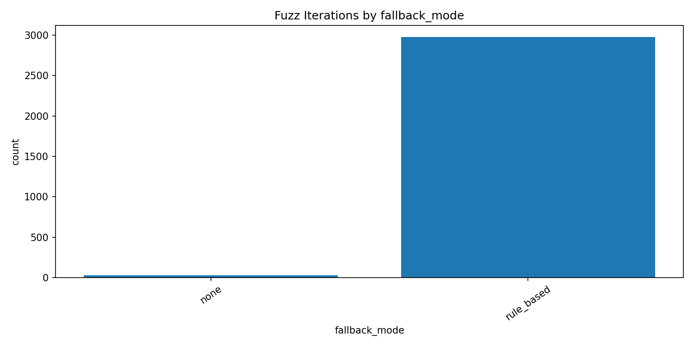
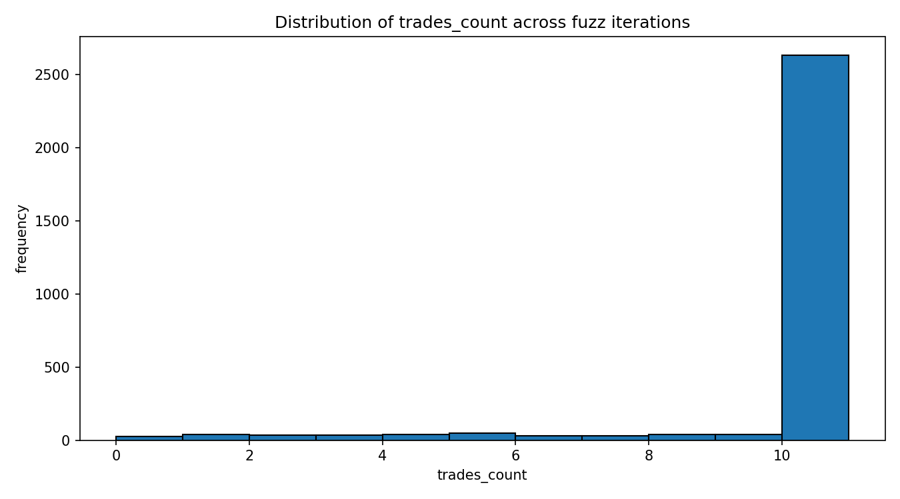
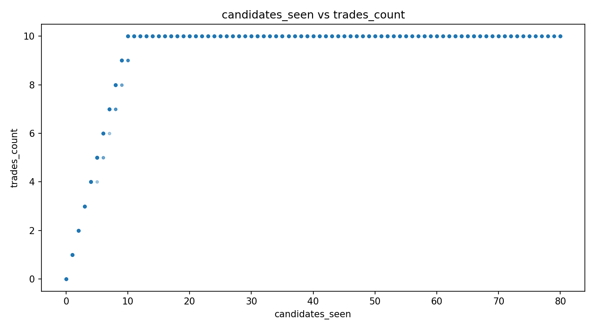

Generated at: 2026-02-27T09:48:06.558384+00:00 (UTC)
Scope: isolated llm_trader.py stress test only. No scheduler/main bot run executed.



| case | ok | fallback_mode | skipped_reason | trades_count | cjk_reason_count | error |
|---|---|---|---|---|---|---|
| missing_keys | 1 | rule_based | 3 | 0 | ai: missing NVIDIA_REASONING_API_KEY | default: missing NVIDIA_API_KEY | |
| all_chat_fail | 1 | rule_based | 3 | 0 | ai: simulated_chat_failure | default: simulated_chat_failure | |
| parse_error | 1 | rule_based_after_parse_error | 3 | 0 | LLM response missing JSON. | |
| schema_error | 1 | rule_based_after_empty_trades | 3 | 0 | LLM returned no usable trades. | |
| empty_usable | 1 | rule_based_after_empty_trades | 3 | 0 | LLM returned no usable trades. | |
| japanese_reason_sanitized | 1 | 2 | 0 | |||
| no_candidates | 1 | no_candidates | 0 | 0 |